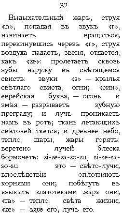

Glossolalia (Section 32)
GLOSSOLALIA

Exhaled heat, a stream of "h," as it collides with the sound "r," begins to revolve; after leaping across the "r," the stream of air falls, and ringing, it reverberates, like "z": it flies through the teeth to the outside in a shining whistle: the sounds of "s" are -- wings of the whistle of light, fires; "Sin", the Hebrew letter -- the fire and the serpent -- rips apart the barrier of the teeth; and a ray penetrates into our mouth; the woven fabric of flying lights is being woven; and the ancient heavens/sky, the warmth, the sphere shapes, the ashen heats burn: the spindle with rays of shining things burbles: zi-ze-za-zo-zu, si-se-sa-so-su: these are -- light-rays; subsequently they condense as roots; they run in tongues as golden-flows of heat; "r" is -- the warmth of the light of life; "z" is -- its glow [zar], its ray.